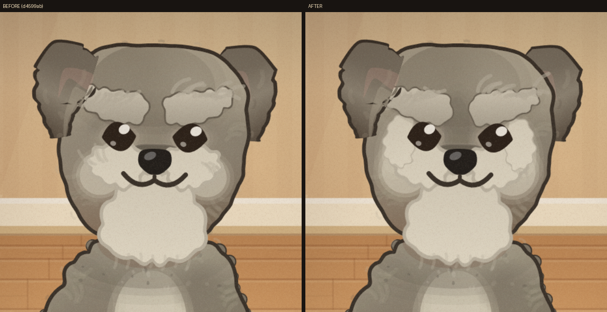
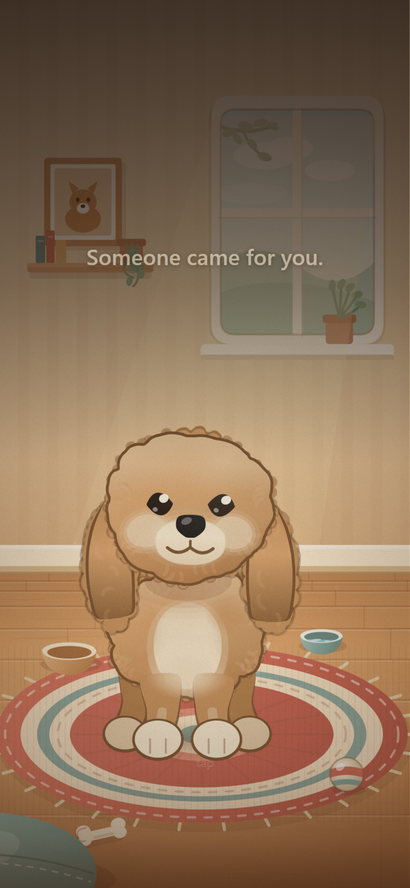

Two things worth a second opinion from you, since you know the breeds and you know her. Best viewed on a phone.
1. The Schnoodle's eyebrows — before and after
The brows used to read as two pale patches stuck onto his face. On a real schnauzer the pale furnishings are continuous — brows, cheeks, moustache and beard are one silver field, and it's the dark that's isolated, as a mask between the eyes. Connecting them fixed it.

Left: before, isolated pale patches. Right: after, one connected silver field.
The question: he's now noticeably pale-heavy — a lot of cream across the front of his face. It's closer to a real adult schnauzer, but it may read a touch too beardy for a puppy. Should the pale be pulled back a little, or is this right?
2. Both of her dogs, full size
Schnoodle — the gift puppy, waiting unnamed on first launch.

Cockapoo — the second dog, unlocked by looking after him well.
3. Close up
The face she'll see every time she opens it.
Neither of these blocks anything — I'll keep building either way. But the face is the one thing that's hard to change later, once she's attached to him.